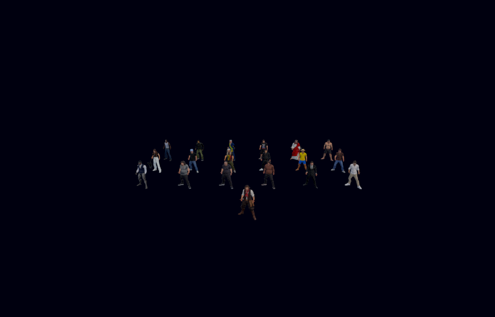
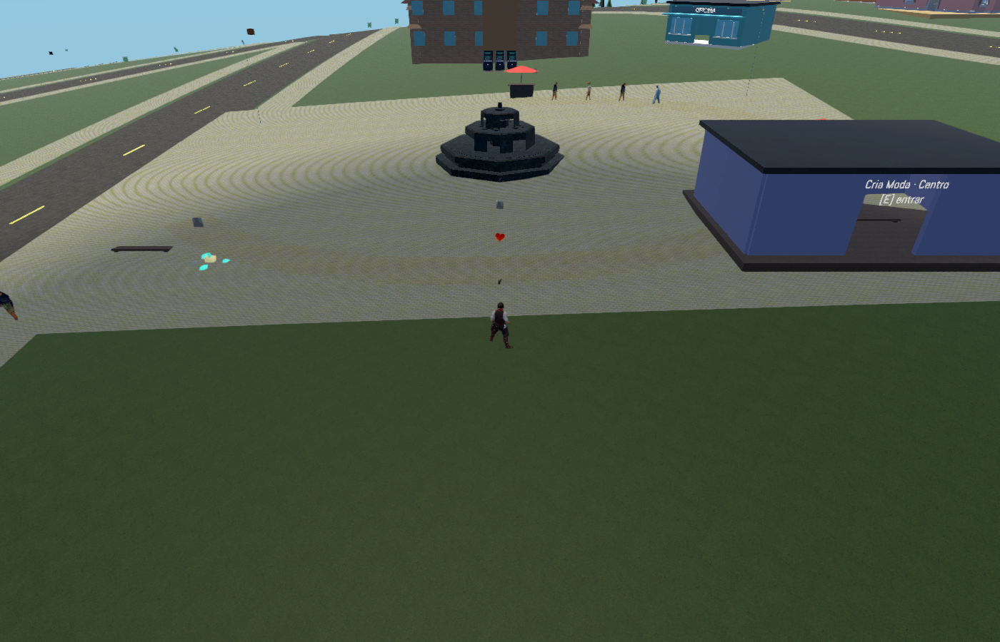

Captura real do executável Windows. Elenco disposto em grade apenas na fixture visual para conferir os18 modelos; no jogo caminham nas rotas normais. Personagem escolhido excluído do elenco, salas com NPCs genéricos, Talia v2 removida e saves migrados. Gato original e streaming de140 preservados.


255 verificações nativas; modos de sala e observadores testados com fixtures, sem crossplay ao vivo.